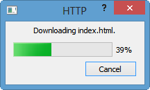
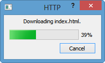
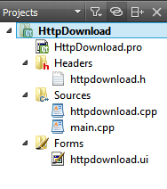

Как сделать скачивание файлов на HTTP в Qt5
Введение
В этой статье рассказывается о том, как сделать скачивание
In this tutorial, we will learn how to download a file using QNetworkRequest.
The QNetworkRequest class holds a request to be sent with QNetworkAccessManager.
QNetworkRequest is part of the Network Access API and is the class holding the information necessary to send a request over the network. It contains a URL and some ancillary information that can be used to modify the request.
This version is a continuation from Downloading files with QNetworkAccessManager by adding UI and QProcessDialog as shown in the pictures below.

We'll start with Qt Gui Application.
First, we need to add network module to our project file, HttpDownload.pro:
QT += network
DEFINES += QT_NO_SSL
Though we do not have the code for SSL, but I added it to the .pro just to demonstrate how we set Macro.

Here is an initial design of dialog for Http file download:

Also, we setup a few slots:
private slots:
void on_downloadButton_clicked();
void on_quitButton_clicked();
void on_urlEdit_returnPressed();
For the last two slots, it's obvious what to do:
void HttpDownload::on_quitButton_clicked()
{
this->close();
}
void HttpDownload::on_urlEdit_returnPressed()
{
on_downloadButton_clicked();
}
Note that the action from return pressed is deferred to on_downloadButton_clicked() slot. So, the key coding will be what to do when download button is clicked.
When download button is pressed, we know the url. So, we'll do construct QNetworkRequest object with the url:
QNetworkRequest(url);
We need to somehow use "GET" method, and it's available via QNetworkAccessManager Class. The class has couple of methods we may need:
Before we do any coding for QNetworkReply, we may want to read this:
signal is emitted.
Here is the skeleton of the code:
void HttpDownload::on_downloadButton_clicked()
{
// get url
url = (ui->urlEdit->text());
// get() method posts a request
// to obtain the contents of the target request
// and returns a new QNetworkReply object
// opened for reading which emits
// the readyRead() signal whenever new data arrives.
reply = manager->get(QNetworkRequest(url));
// Whenever more data is received from the network,
// this readyRead() signal is emitted
connect(reply, SIGNAL(readyRead()),
this, SLOT(httpReadyRead()));
}
In this tutorial, I could not get the file size before the download, I mean, not every site I tried. The progressDialog is failing to display the progress in such a case.
Here are my tries:
void HttpDownload::updateDownloadProgress(qint64 bytesRead, qint64 totalBytes)
for the signal
connect(reply, SIGNAL(downloadProgress(qint64,qint64)),
this, SLOT(updateDownloadProgress(qint64,qint64)));
where the reply is an QNetworkReply object defined as:
reply = manager->get(QNetworkRequest(url));
The totalBytes is -1 and QT doc says:
bytesTotal indicates the total number of bytes expected to be downloaded. If the number of bytes to be downloaded is not known, bytesTotal will be -1.
So, it sets the max value for the progress bar -1 which is not right:
progressDialog->setMaximum(totalBytes);
QFileInfo fileInfo(url.path());
fileSize = fileInfo.size();
But this returns 0, probably it evalues 0 from the QVariant::invalid.
reply->header(QNetworkRequest::ContentLengthHeader).toULongLong();
It gives me 0, probably because of the same reason as in my try #2.
I'll fix this problem as soon as I figured out.
Or if you know the answer, please give me an advice "contactus@bogotobogo.com"
In this tutorial, I'm using #1 approach, though internally, Qt is probably, doing the same.
Project zip file: HttpWindow.zip
main.cpp
#include "httpdownload.h"
#include <QApplication>
int main(int argc, char *argv[])
{
QApplication a(argc, argv);
HttpDownload w;
w.setWindowTitle("Http Download");
w.show();
return a.exec();
}
httpdownload.h
#ifndef HTTPDOWNLOAD_H
#define HTTPDOWNLOAD_H
#include <QDialog>
#include <QNetworkAccessManager>
#include <QNetworkRequest>
#include <QNetworkReply>
#include <QUrl>
#include <QProgressDialog>
#include <QFile>
#include <QFileInfo>
#include <QDir>
#include <QMessageBox>
namespace Ui {
class HttpDownload;
}
class HttpDownload : public QDialog
{
Q_OBJECT
public:
explicit HttpDownload(QWidget *parent = 0);
~HttpDownload();
public:
void startRequest(QUrl url);
private slots:
void on_downloadButton_clicked();
void on_quitButton_clicked();
void on_urlEdit_returnPressed();
// slot for readyRead() signal
void httpReadyRead();
// slot for finished() signal from reply
void httpDownloadFinished();
// slot for downloadProgress()
void updateDownloadProgress(qint64, qint64);
void enableDownloadButton();
void cancelDownload();
private:
Ui::HttpDownload *ui;
QUrl url;
QNetworkAccessManager *manager;
QNetworkReply *reply;
QProgressDialog *progressDialog;
QFile *file;
bool httpRequestAborted;
qint64 fileSize;
};
#endif // HTTPDOWNLOAD_H
httpdownload.cpp
#include "httpdownload.h"
#include "ui_httpdownload.h"
HttpDownload::HttpDownload(QWidget *parent) :
QDialog(parent),
ui(new Ui::HttpDownload)
{
ui->setupUi(this);
ui->urlEdit->setText("http://qt.com");
ui->statusLabel->setWordWrap(true);
ui->downloadButton->setDefault(true);
ui->quitButton->setAutoDefault(false);
progressDialog = new QProgressDialog(this);
connect(ui->urlEdit, SIGNAL(textChanged(QString)),
this, SLOT(enableDownloadButton()));
connect(progressDialog, SIGNAL(canceled()), this, SLOT(cancelDownload()));
}
HttpDownload::~HttpDownload()
{
delete ui;
}
void HttpDownload::on_downloadButton_clicked()
{
manager = new QNetworkAccessManager(this);
// get url
url = (ui->urlEdit->text());
QFileInfo fileInfo(url.path());
QString fileName = fileInfo.fileName();
if (fileName.isEmpty())
fileName = "index.html";
if (QFile::exists(fileName)) {
if (QMessageBox::question(this, tr("HTTP"),
tr("There already exists a file called %1 in "
"the current directory. Overwrite?").arg(fileName),
QMessageBox::Yes|QMessageBox::No, QMessageBox::No)
== QMessageBox::No)
return;
QFile::remove(fileName);
}
file = new QFile(fileName);
if (!file->open(QIODevice::WriteOnly)) {
QMessageBox::information(this, tr("HTTP"),
tr("Unable to save the file %1: %2.")
.arg(fileName).arg(file->errorString()));
delete file;
file = 0;
return;
}
// used for progressDialog
// This will be set true when canceled from progress dialog
httpRequestAborted = false;
progressDialog->setWindowTitle(tr("HTTP"));
progressDialog->setLabelText(tr("Downloading %1.").arg(fileName));
// download button disabled after requesting download
ui->downloadButton->setEnabled(false);
startRequest(url);
}
void HttpDownload::httpReadyRead()
{
// this slot gets called every time the QNetworkReply has new data.
// We read all of its new data and write it into the file.
// That way we use less RAM than when reading it at the finished()
// signal of the QNetworkReply
if (file)
file->write(reply->readAll());
}
void HttpDownload::updateDownloadProgress(qint64 bytesRead, qint64 totalBytes)
{
if (httpRequestAborted)
return;
progressDialog->setMaximum(totalBytes);
progressDialog->setValue(bytesRead);
}
void HttpDownload::on_quitButton_clicked()
{
this->close();
}
void HttpDownload::on_urlEdit_returnPressed()
{
on_downloadButton_clicked();
}
void HttpDownload::enableDownloadButton()
{
ui->downloadButton->setEnabled(!(ui->urlEdit->text()).isEmpty());
}
// During the download progress, it can be canceled
void HttpDownload::cancelDownload()
{
ui->statusLabel->setText(tr("Download canceled."));
httpRequestAborted = true;
reply->abort();
ui->downloadButton->setEnabled(true);
}
// When download finished or canceled, this will be called
void HttpDownload::httpDownloadFinished()
{
// when canceled
if (httpRequestAborted) {
if (file) {
file->close();
file->remove();
delete file;
file = 0;
}
reply->deleteLater();
progressDialog->hide();
return;
}
// download finished normally
progressDialog->hide();
file->flush();
file->close();
// get redirection url
QVariant redirectionTarget = reply->attribute(QNetworkRequest::RedirectionTargetAttribute);
if (reply->error()) {
file->remove();
QMessageBox::information(this, tr("HTTP"),
tr("Download failed: %1.")
.arg(reply->errorString()));
ui->downloadButton->setEnabled(true);
} else if (!redirectionTarget.isNull()) {
QUrl newUrl = url.resolved(redirectionTarget.toUrl());
if (QMessageBox::question(this, tr("HTTP"),
tr("Redirect to %1 ?").arg(newUrl.toString()),
QMessageBox::Yes | QMessageBox::No) == QMessageBox::Yes) {
url = newUrl;
reply->deleteLater();
file->open(QIODevice::WriteOnly);
file->resize(0);
startRequest(url);
return;
}
} else {
QString fileName = QFileInfo(QUrl(ui->urlEdit->text()).path()).fileName();
ui->statusLabel->setText(tr("Downloaded %1 to %2.").arg(fileName).arg(QDir::currentPath()));
ui->downloadButton->setEnabled(true);
}
reply->deleteLater();
reply = 0;
delete file;
file = 0;
manager = 0;
}
// This will be called when download button is clicked
void HttpDownload::startRequest(QUrl url)
{
// get() method posts a request
// to obtain the contents of the target request
// and returns a new QNetworkReply object
// opened for reading which emits
// the readyRead() signal whenever new data arrives.
reply = manager->get(QNetworkRequest(url));
// Whenever more data is received from the network,
// this readyRead() signal is emitted
connect(reply, SIGNAL(readyRead()),
this, SLOT(httpReadyRead()));
// Also, downloadProgress() signal is emitted when data is received
connect(reply, SIGNAL(downloadProgress(qint64,qint64)),
this, SLOT(updateDownloadProgress(qint64,qint64)));
// This signal is emitted when the reply has finished processing.
// After this signal is emitted,
// there will be no more updates to the reply's data or metadata.
connect(reply, SIGNAL(finished()),
this, SLOT(httpDownloadFinished()));
}